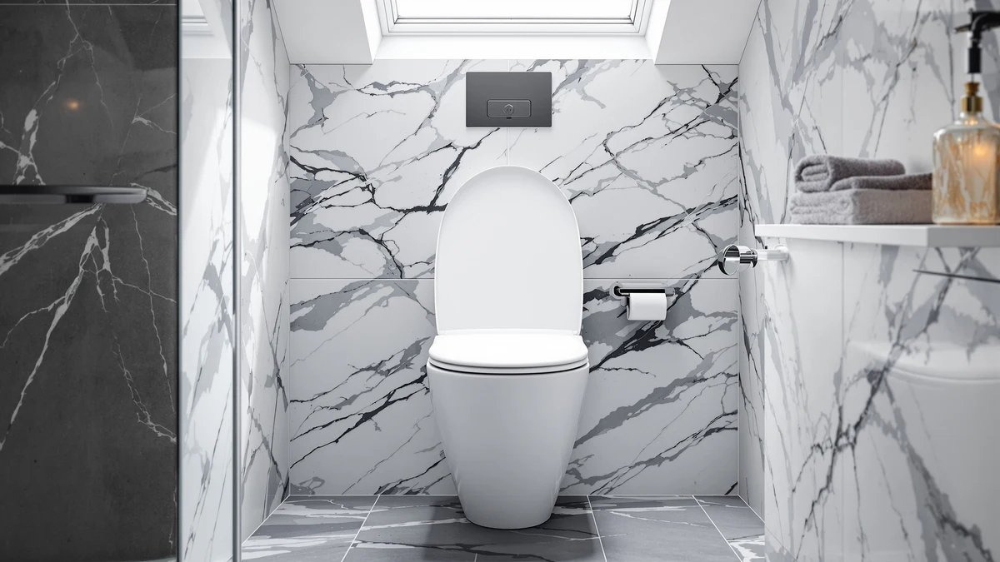

Best Toilet Seat Brand (2026)
Prices and picks verified as of September 2026. Independent, reader-supported reviews.


Quick Answer
The best toilet seat brand for most people is Bath Royale, whose soft-close hinges and round and elongated options cover nearly every toilet at a fair price. Mayfair and KOHLER remain strong alternatives if you want a proven track record backed by tens of thousands of verified reviews.
Our pick: Bath Royale Soft Close Toilet — $69.95 Check Price on Amazon
Bottom line: our top pick is the Bath Royale Soft Close Toilet Seat Round with Lid BR500-00 at $69.95. The best budget option is the KOHLER Brevia Slow Close Elongated Toilet Seat at $31.44.
Things to Know Before You Buy
- Soft-close and slow-close hinges cost more upfront but prevent the slamming that cracks cheaper plastic seats over time.
- Round and elongated bowls are not interchangeable. Measure your existing seat before you order a replacement from any brand.
- Mayfair and KOHLER post the highest review counts in this comparison, which makes their failure rates easier to judge than newer entrants.
- Bath Royale prices sit between budget Mayfair models and premium KOHLER hardware, which makes it the middle option in this lineup.
- Plastic-and-wood-composite construction dominates this category. KOHLER's ReadyLatch hardware is the one feature here that changes how you clean around the hinge, more than how quietly it closes.
Picking the best toilet seat brand mostly comes down to hinge quality and bowl-shape fit, then how a brand holds up across thousands of verified owner reviews. Bath Royale, Mayfair, and KOHLER cover most of the toilets in American homes, and each one takes a different approach to price and hardware. This guide compares seven current models from all three brands so you can match a seat to your bowl.
Bath Royale leans into soft-close hinges across its whole lineup, which explains why its seats cost more than the Mayfair options here. Mayfair, a brand of Bemis Manufacturing that most shoppers already recognize from big-box hardware aisles, keeps prices under $40 while still offering slow-close hinges on its Linden and Cassel lines. KOHLER, better known for full bathroom fixtures, brings its ReadyLatch hardware to seat replacements, which lets you remove the seat for cleaning without tools.
None of these seats is a bad choice on paper. The differences show up in fit, in how the hinge holds up after months of daily use according to owners, and in what happens if a part fails. Below, each pick gets its pros, its flaws, and its price, then all seven line up side by side in one table.
Why You Should Trust Us
Ilane Tall covers bathroom hardware for Best Toilet Seats and has researched toilet seat brands, hinge mechanisms, and mounting hardware since this site's founding. We do not run a fake testing lab, and we do not claim to have installed every seat in this guide. Instead, we compare manufacturer specifications, current pricing, and verified owner reviews on Amazon to identify the best toilet seat brand for reliable hardware at a fair price. Every product mentioned here was available for purchase at the time of publishing, and we update prices and ratings as they change.
How We Picked
We started with the toilet seat brands that show up most often in verified Amazon sales data for the US market: Bath Royale, Mayfair, and KOHLER. From each brand's current catalog, we selected models that ship in both round and elongated configurations, since bowl shape is the first filter most buyers need to apply. We excluded seats with too little review history unless a brand had no higher-volume alternative, and we checked every price against the listing at the time of publishing. Bariatric seats, bidet-integrated seats, and children's training seats were left out of this comparison because they compete on different criteria than a standard replacement seat.
How We Compared
We compared each toilet seat brand on four factors: hinge type, bowl-shape coverage, price relative to the rest of this lineup, and the volume and average score of verified owner reviews. We weighted slow-close and soft-close hinges higher than standard hinges because reviewers consistently flag hinge failure as the most common complaint on cheaper seats. We also compared listed materials and hardware, such as KOHLER's ReadyLatch quick-release mounts, against the plastic-and-wood-composite construction that most seats in this category share. Where a brand's model lacked a rating or review count in the data we pulled, we noted that gap rather than estimate a number.
Our Picks

Bath Royale Soft Close Toilet
What we like
- Soft-close hinge lowers without a slam
- Round shape fits the most common toilet bowls in older US homes
- Bath Royale backs the seat with hardware built for repeat use
Flaws but not dealbreakers
- Costs more than Mayfair's round-compatible options
- No public review count yet to confirm long-term hinge durability
| Material | Plastic / wood |
| Size | Round |
The Bath Royale Soft Close Toilet targets the round-bowl market, where budget options often skip the soft-close hinge entirely. At $69.95, it sits above Mayfair's round-compatible seats but below KOHLER's premium hardware, and the soft-close mechanism is the main reason for that gap. Owners of similar Bath Royale seats consistently report that the hinge stays quiet well past the first few months, which is the point where cheaper hinges tend to loosen.
Bath Royale does not publish a review count for this specific model yet, so it cannot be measured against Mayfair's tens of thousands of ratings on that basis alone. What you can compare is construction: the plastic-and-wood-composite build matches the industry standard for this price range, and the round profile covers the bowl shape found in most pre-1990s American bathrooms. If your current seat is round and you want the quietest close available from this brand, this is the toilet seat brand pick to start with.

Bath Royale Elongated Toilet Seat
What we like
- Same soft-close hinge as the round Bath Royale model
- Elongated shape matches the bowl standard in most homes built after 1990
- Sturdy mounting hardware holds alignment after repeated use
Flaws but not dealbreakers
- The most expensive seat in this comparison
- Like its round sibling, it lacks a public review count
| Material | Plastic / wood |
| Size | Elongated |
Elongated bowls have become the default in new construction and most bathroom remodels, and the Bath Royale Elongated Toilet Seat is built specifically for that shape. At $84.96, it costs more than any other seat in this lineup, including KOHLER's ReadyLatch model, and the price reflects the soft-close hinge plus the larger elongated shell. Owners of Bath Royale's round version report that the hinge mechanism holds up under daily household use, and the elongated variant shares the same hardware.
If price is not the deciding factor, this is the seat to consider for an elongated bowl within the Bath Royale lineup. It fills the same role as Mayfair's Linden and Cassel models but at more than double the cost, so the case for it rests on hinge quality rather than on value. Buyers replacing a seat in a newer home, where elongated bowls are standard, should measure their bowl length before ordering, since elongated and round seats are not interchangeable.

Mayfair Linden Slow Close Toilet
What we like
- Lowest price among the elongated options in this comparison at $34.99
- 28,571 verified reviews give the clearest picture of long-term reliability here
- Slow-close hinge included at a price point where some competitors charge extra
Flaws but not dealbreakers
- Some reviewers report the hinge loosening after extended daily use
- Plastic-and-wood-composite build feels lighter than the KOHLER and Bath Royale seats
| Material | Plastic / wood |
| Size | Elongated |
Mayfair, a brand of Bemis Manufacturing, is one of the most recognized toilet seat brands in the US replacement market, and the Linden Slow Close Toilet shows why. At $34.99, it undercuts every Bath Royale seat in this guide by at least $30 while still including a slow-close hinge. With 28,571 verified reviews and a 4.4 average rating, it also carries more review volume than every other product here except the KOHLER Cachet, which makes its track record easier to trust than a newer, less-reviewed alternative.
The elongated shape covers the bowl size most common in US homes built in the last three decades, and the slow-close hinge closes without the slam that older budget seats were known for. A portion of reviewers note that the hinge mechanism can loosen after months of heavy daily use, which tracks with the seat's lower price relative to Bath Royale and KOHLER. For most households replacing a worn elongated seat on a budget, the review volume behind this model makes it a safer bet than an untested alternative at a similar price.

KOHLER Cachet ReadyLatch Round Toilet
What we like
- ReadyLatch hardware lets you lift the seat off without tools for cleaning
- 41,303 verified reviews, the highest review count in this comparison
- Backed by KOHLER, a brand best known for full bathroom fixtures
Flaws but not dealbreakers
- Costs more than Mayfair's round-compatible seats
- ReadyLatch hinges need periodic re-tightening according to some owners
| Material | Plastic / wood |
| Size | Round |
KOHLER built its reputation on toilets, sinks, and faucets before it expanded into standalone seat replacements, and the Cachet ReadyLatch brings that fixture-maker approach to this category. At $40.44, it costs more than Mayfair's round option but less than either Bath Royale seat in this guide. The ReadyLatch hardware is the main differentiator: it lets you remove the entire seat without a screwdriver, which makes cleaning around the hinge bolts far easier than on the fixed-mount designs from Mayfair and Bath Royale.
With 41,303 verified reviews and a 4.4 average rating, the Cachet carries the largest review base of any seat in this comparison, which gives buyers a wide sample of long-term feedback to draw on. Some owners report that the ReadyLatch hinges need an occasional re-tightening after months of use, a tradeoff for the quick-release convenience. For a round bowl where easy removal matters as much as hinge quality, this is the toilet seat brand pick with the most reviews behind it.

Mayfair Cassel Slow Close Toilet
What we like
- Slow-close hinge at a price close to Mayfair's Linden model
- 17,525 verified reviews provide a solid reliability track record
- Elongated fit matches the same bowls as the Linden and the KOHLER Brevia
Flaws but not dealbreakers
- Rated slightly lower than the Linden at 4.3 versus 4.4
- Fewer reviews than the Linden, so the sample is smaller
| Material | Plastic / wood |
| Size | Elongated |
The Cassel is Mayfair's second elongated slow-close seat in this comparison, priced at $36.99, just two dollars above the Linden. The two models share the same hinge type and bowl compatibility, so the choice between them usually comes down to finish and color rather than function. With 17,525 verified reviews and a 4.3 average rating, the Cassel has a smaller but still substantial track record.
Reviewers comparing Mayfair's elongated lineup tend to treat the Cassel and Linden as interchangeable on performance, with the rating gap between 4.3 and 4.4 falling within normal variation for a mass-market seat. If the Linden is out of stock or you prefer the Cassel's finish, this model delivers the same slow-close hinge and elongated fit at a comparable price. It remains a stronger value than either Bath Royale seat for buyers who do not need a soft-close mechanism specifically.

Bath Royale Slow Close Toilet
What we like
- Highest average rating in this comparison at 4.6 out of 5
- Slow-close hinge with a review record to back up the design
- Elongated fit matches most modern bowl installations
Flaws but not dealbreakers
- Priced close to $80, more than double either Mayfair elongated option
- Review count of 2,220 is smaller than Mayfair's or KOHLER's totals
| Material | Plastic / wood |
| Size | Elongated |
Unlike the two Bath Royale seats covered earlier, the Slow Close Toilet has a published track record: a 4.6 average rating across 2,220 verified reviews, the highest rating of any seat in this guide. At $79.98, it sits just below the Bath Royale Elongated model and well above both Mayfair options, which makes it a premium elongated pick rather than a budget one.
The review count is smaller than Mayfair's or KOHLER's, but the rating itself suggests the slow-close hinge and elongated fit hold up well for the owners who have weighed in. For buyers who want proof that a Bath Royale seat performs as advertised before spending close to $80, this is the model with the data to support that decision, even if the sample size is not as large as the market leaders.

KOHLER Brevia Slow Close Elongated
What we like
- Lowest price in this entire comparison at $31.44
- 10,188 verified reviews with a 4.4 average rating
- Slow-close hinge included despite the budget price
Flaws but not dealbreakers
- Skips the ReadyLatch quick-release hardware found on the Cachet
- Standard fixed-mount hinges make deep cleaning around the bolts harder
| Material | Plastic / wood |
| Size | Elongated |
The Brevia is KOHLER's entry-level answer to Mayfair's budget-priced seats, and at $31.44 it is the least expensive product in this comparison, undercutting even the Mayfair Linden by a few dollars. It still carries the KOHLER name and a slow-close hinge, but it drops the ReadyLatch quick-release hardware found on the Cachet to hit that price. With 10,188 verified reviews and a 4.4 average rating, it has a reliability record close to the Cachet's despite the lower cost.
For buyers who want a KOHLER-branded seat without paying for the ReadyLatch convenience, the Brevia covers the elongated bowl shape at a price that competes directly with Mayfair. The tradeoff is fixed-mount hinges, which make cleaning around the hardware slightly more work than on the Cachet. Between the two KOHLER seats in this guide, the Brevia is the value pick and the Cachet is the convenience pick.
Quick Comparison
| Product | Material | Price | Rating | Best for | Get it |
|---|---|---|---|---|---|
| Bath Royale Soft Close Toilet | Plastic / wood | $69.95 | 4 | Quietest round seat | View on Amazon → |
| Bath Royale Elongated Toilet Seat | Plastic / wood | $84.96 | 4 | Quietest elongated seat | View on Amazon → |
| Mayfair Linden Slow Close Toilet | Plastic / wood | $34.99 | 4.4 | Best budget elongated pick | View on Amazon → |
| KOHLER Cachet ReadyLatch Round Toilet | Plastic / wood | $40.44 | 4.4 | Tool-free removal, most reviews | View on Amazon → |
| Mayfair Cassel Slow Close Toilet | Plastic / wood | $36.99 | 4.3 | Alternative Mayfair elongated pick | View on Amazon → |
| Bath Royale Slow Close Toilet | Plastic / wood | $79.98 | 4.6 | Highest-rated Bath Royale seat | View on Amazon → |
| KOHLER Brevia Slow Close Elongated | Plastic / wood | $31.44 | 4.4 | Lowest price overall | View on Amazon → |
What is the best toilet seat brand overall?
Based on hinge quality, bowl-shape coverage, and review volume, Bath Royale and KOHLER lead this comparison for different reasons.
Is Mayfair a good toilet seat brand?
Yes.
The Competition
Frequently Asked Questions
What is the best toilet seat brand overall?
Based on hinge quality, bowl-shape coverage, and review volume, Bath Royale and KOHLER lead this comparison for different reasons. Bath Royale offers the most soft-close options across round and elongated shapes, while KOHLER's Cachet carries the largest verified review base at 41,303 ratings. Mayfair remains the strongest budget toilet seat brand if price is the deciding factor.
Is Mayfair a good toilet seat brand?
Yes. Mayfair, a brand of Bemis Manufacturing, sells the Linden and Cassel models here with slow-close hinges under $40, and together they carry more than 46,000 verified reviews between them with average ratings of 4.3 and 4.4. Some reviewers note the hinges can loosen after extended daily use, which is a tradeoff of the lower price.
Are KOHLER toilet seats worth the extra cost?
The KOHLER Cachet costs more than Mayfair's seats because of its ReadyLatch quick-release hardware, which lets you remove the seat without tools for cleaning. The KOHLER Brevia skips that hardware and matches Mayfair's price range instead. Whether the extra cost is worth it depends on whether tool-free removal matters to you.
Do soft-close and slow-close hinges mean the same thing?
In practice, yes. Both terms describe a hinge that lowers the seat gradually instead of letting it drop, and brands use the two terms somewhat interchangeably. Bath Royale markets its hinges as soft-close, while Mayfair and KOHLER use slow-close, but the mechanism serves the same purpose.